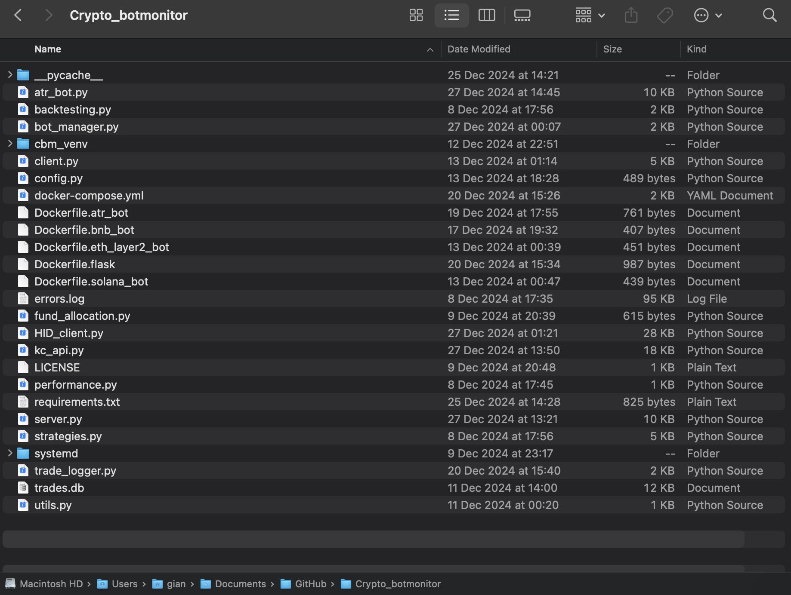

Serverbasierter Trading-Bot für automatisierte Kryptowährungstrades.
In einem privaten Projekt entwickelte ich einen Trading-Bot zur Durchführung automatisierter Kryptowährungstrades. Der Bot wurde serverbasiert aufgebaut und ermöglichte zunächst manuelles Trading über ein lokales Interface.
Ziel war die Umsetzung eines parametergesteuerten Systems zur Ausführung automatisierter Handelsstrategien. Die Serverkommunikation funktionierte stabil, die vollständige Automatisierung war als nächster Schritt vorgesehen.
